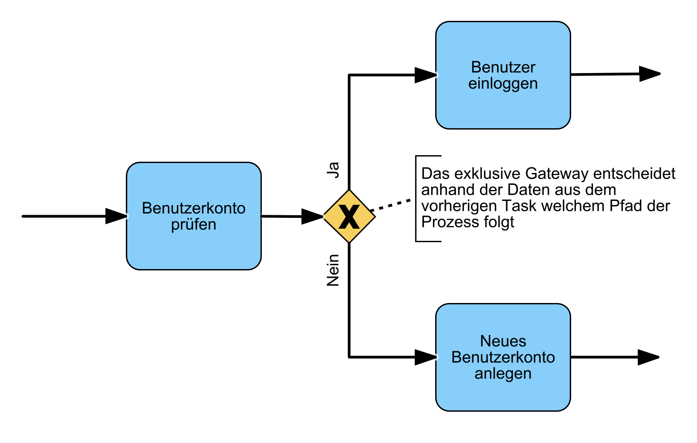
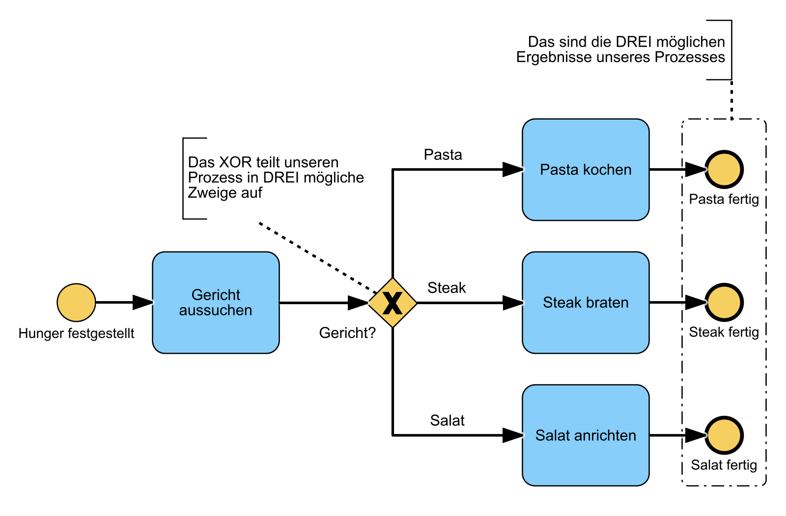
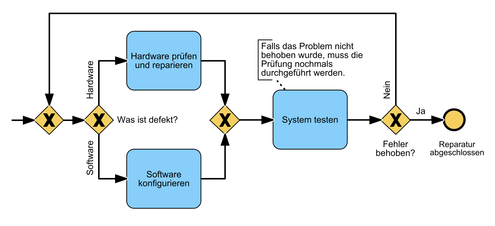
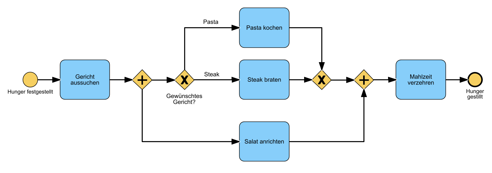
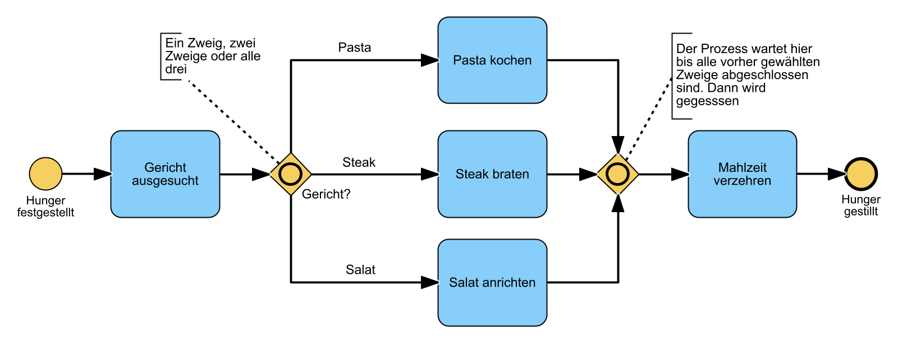
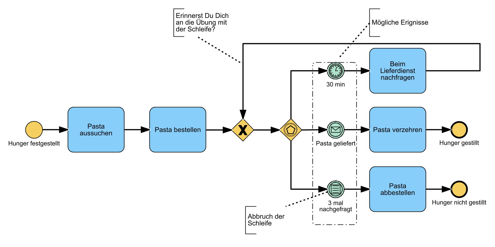
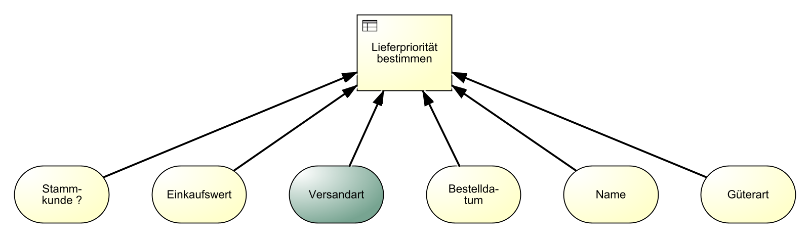
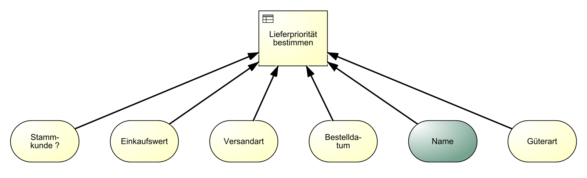

Das Verb “lernos” ist die Zukunftsform von “lernen” auf Esperanto (mi lernos = ich werde lernen, ni lernos = wir werden lernen). lernOS ist ein Betriebssystem für Lebenslanges Lernen und Lernende Organisationen. lernOS ist aber keine Software, sondern “Brainware”. Es ist eine Art zu Denken und zu Handeln, um als Einzelperson, Team oder Organisation im 21. Jahrhundert erfolgreich zu sein. Das groß geschriebene “OS” im Namen unterstreicht die Bedeutung der Digitalisierung für unsere vernetzte Wissensgesellschaft.
Zu lernOS gibt es drei grundlegende Leitfäden, die den Ansatz auf individueller Ebene (lernOS für Dich, Präsentation), auf Ebene von Teams (lernOS für Teams) und auf Ebene von Organisationen (lernOS für Organisationen) beschreiben. Zusätzlich gibt es die lernOS Toolbox, die oft genutzte Methoden und Werkzeuge erklärt (z.B. Podcast, Barcamp, Sketchnoting, Expert Debriefing). lernOS ist nicht auf der sprichwörtlichen grünen Wiese entstanden, sondern ist eine Zusammenstellung von bereits bestehenden und bewährten Methoden. Alle lernOS Leitfäden sind unter der offenen Lizenz Creative Commons Attribution (CC BY) auf der lernOS Webseite verfügbar und können gerne an die eigenen Bedürfnisse angepasst werden.
Wenn du weitere Fragen bezüglich lernOS hast, oder Unterstützung von Gleichgesinnten brauchst, kannst du die Community-Plattform CONNECT und den lernOS CircleFinder nutzen oder mit #lernOS auf Twitter schreiben. Beachte: Die Meisterschaft von lernOS ist eine Frage von Monaten oder Jahren, nicht Stunden oder Tagen. Also: Keep Calm & Learn On!
Dein [@locutusvonborg](https://www.linkedin.com/in/alexander-rose-loci/)
Aus Gründen der besseren Lesbarkeit wird im Folgenden auf die gleichzeitige Verwendung weiblicher und männlicher Sprachformen verzichtet und das generische Maskulinum verwendet. Sämtliche Personenbezeichnungen gelten gleichermaßen für beide Geschlechter.
lernOS Leitfäden stehen unter der Lizenz Creative Commons Namensnennung 4.0 International (CC BY 4.0):
Du darfst:
Unter folgenden Bedingungen:

Bei der Prozessmodellierung werden Geschäftsprozesse oder Ausschnitte daraus abstrahiert, meist grafisch dargestellt und somit modelliert. Der Schwerpunkt liegt auf dem Darstellen des Ablaufs, aber auch Daten und Organisation (bzw. Organisationseinheiten) können modelliert werden. Prozessmodellierung ist ein zentraler Aspekt der ganzheitlichen Unternehmensabbildung und wird in der Regel als ein Teil des Geschäftsprozessmanagements verstanden.
Die Business Process Model and Notation (BPMN) ist eine grafische Spezifikationssprache in der Wirtschaftsinformatik und im Prozessmanagement. Sie stellt Symbole zur Verfügung, mit denen Fach-, Methoden- und Informatikspezialisten Geschäftsprozesse und Arbeitsabläufe modellieren und dokumentieren können.
Decision Model and Notation (DMN) ist ein offizieller Notationsstandard für Entscheidungsregeln im Geschäftsprozessmanagement, der von der Object Management Group (OMG) definiert wurde. Dieser Standard wird zum Beschreiben und Modellieren von wiederholbaren Entscheidungen in Organisationen genutzt. DMN ermöglicht Nutzern aus den verschiedensten Abteilungen, effektiv bei der Entscheidungsmodellierung zusammenzuarbeiten.
In der aktuellen VUCA-Welt, in der die digitale Transformation und die damit verbundene Automatisierung von Arbeitsabläufen und Geschäftsprozessen in jede Branche unaufhaltsam vordringt, wird die Kompetenz bestehende Geschäftsprozesse lesen und neue Geschäftsprozesse modellieren zu können von sehr hohem Nutzen für dich sein. In Kombination mit der Fertigkeit Geschäftsregeln verstehen und modellieren zu können, besitzt du die optimalen Voraussetzungen als Bindeglied zwischen dem Business (Fachbereich) und der IT-Abteilung durch eine gemeinsame verbindenden Sprache (BPMN & DMN) die Digitale Transformation entscheidend nach vorne zu bringen.
Dieser Lernpfad funktioniert für alle Erfahrungsstufen und richtet sich somit an alle Interessenten dieses Themas. Es sind keine Vorkenntnisse nötig. Es ist egal, ob du noch nie etwas von Prozessmodellierung gehört hast, oder bereits erfolgreich erste Modellierungen vorgenommen hast.
Das bedeutet auch, dass die Übungen eine steile Lernkurve für dich bereithalten. Alle BPMN-Übungen sind so angelegt, dass sie auch mit einem Stift und einem Blatt Papier durchführbar sind.
Wie bei allem gilt auch beim Modellieren: Übung macht den Meister!
Dafür haben wir den Lernpfad Prozessmodellierung entwickelt. Er enthält unter anderem:
Fehlt: Sketchnote von Ralf
Inhalt: Trennung von Lerninhalt & KATA. Trennung von BPMN & DMN
Die meisten Katas stehen in 2 Varianten zur Verfügung:
Es muss nur eine der beiden Varianten bis zum nächsten Weekly erarbeitet werden. Beide Varianten haben didaktische Vor- und Nachteile. Dieser Ansatz trägt dem Umstand Rechnung, verschiedene Leistungsstufen innerhalb eines Circles bedienen zu wollen. Während Variante 1 eher für Beginner gedacht und sehr gut dazu geeignet ist, sich im Weekly gegenseitiges Feedback zu geben, ist Variante 2 eher für Fortgeschrittene gedacht, die bereits ihre konkreten eigenen Ideen & Aufgabenstellungen lösen wollen.
In dieser Kata machst du dich mit den wichtigsten Grundelementen der Prozessmodellierung vertraut. Nimm dir etwas Zeit für diese Übung, da du viele neue Dinge lernen wirst. In dieser Kata geht es um das erstmalige Kennenlernen. In den Kata der folgenden Wochen werden wir alle Themen an praktischen Beispielen weiter vertiefen
Dauer: ca. 60 Minuten
In einer idealen Welt geht immer alles glatt. Es gibt keine Störungen oder unvorhergesehene Ereignisse. I.d.R. gibt es auch nichts zu entscheiden. In der Welt der Prozessmodellierung nennen wir diesen Weg den Happy-Path. Tatsächlich beginnen wir bei einem neuen Prozessmodell zunächst immer mit der einfachsten Variante. Komplizierter wird es später schon ganz von alleine.
Dauer: ca. 30 Minuten
Schaue dir zunächst die <Lernunterlagen> an und modelliere dann:
Leider, oder besser zum Glück, ist der Happy-Path die Ausnahme. Denn wir können die Dinge beeinflussen, indem wir entscheiden. BPMN bietet eine ganze Reihe verschiedener Entscheidungsmöglichkeiten (Gateways) die du in dieser Kata kennenlernen und anwenden wirst.
Dauer: 90 Minuten
Schaue Dir zunächst die <Lernunterlagen> an und modelliere dann:
Attribute mit visuellen Effekten
Die BPMN-Spezifikation sieht eine Vielzahl von Attributen vor, jedoch haben nur wenige dieser Attribute auch visuelle Auswirkungen. Dennoch kann es sehr hilfreich sein, über die Attribute direkt auf den Objekten einen schnellen Überblick zu bekommen. Die Liste in den Lernunterlagen gibt dir einen Überblick über die wichtigsten dieser Attribute.
Dauer: 60 Minuten
Schaue Dir zunächst die <Lernunterlagen> an und modelliere dann:
Nachdem wir jetzt sehr viel über die Beziehungen und Abhängigkeiten der Elemente in einem Prozessdiagramm gelernt haben, kommen wir nun zu den Verantwortlichkeiten. Diese werden in BPMN durch Pools und Lanes beschrieben.
Dauer: 60 Minuten
Schaue Dir zunächst die <Lernunterlagen> an und modelliere dann:
Neben den schon bekannten Events, bietet BPMN eine ganze Reihe weiterer Eventtypen, um alle Eventualitäten des richtigen Lebens abbilden zu können. Grundsätzlich unterscheiden wir in Start-, Zwischen- und Endereignisse. Die Zwischenereignisse werden nochmals in Eintretend und Ausgelöst unterteilt. In dieser Kata lernst du die häufigsten Eventtypen kennen.
Dauer: 90 Minuten
Schaue Dir zunächst die <Lernunterlagen> an und modelliere dann:
Ein beliebiges Prozessdiagramm mit mindestens 6 verschiedenen Eventtypen (Start/Zwischen/Ende)
Die Tee-Zubereitung: Modelliere deine bisherige Tee-Zubereitung weiter. Verwende mindestens:
In dieser Kata lernst du die Funktion von Unterprozessen, sowie die Kommunikation zwischen verschiedenen Pools kennen. Dies wird dir helfen, komplexere Prozesse übersichtlich zu halten und die Kommunikation zwischen verschiedenen Organisationen zu visualisieren.
Dauer: 60 Minuten
Schaue Dir zunächst die <Lernunterlagen> an und modelliere dann:
Ab diesem Kapitel tauchen wir in die spannende Welt der DMN ein. Diese Welt erweitert die dir bisher bekannten Möglichkeiten der Modellierung enorm und erschließt ganz neue Bereiche, die besonders für die Automatisierung von Prozessen nützlich sind. In dieser Kata lernst du die Grundelemente von DMN kennen. du erarbeitest die Unterschiede zwischen BPMN und DMN und beschäftigst dich mit Entscheidungstabellen.
Dauer: 60 Minuten
Schaue Dir zunächst die <Lernunterlagen> an und modelliere dann:
Hit-Policies bestimmen, wie die Entscheidungstabelle mit Eingaben umgeht, die mehrere oder gar keine Regeln erfüllen. Sie stellen das Herzstück des DMN-Universums dar, denn genau hier werden die Entscheidungen nach den vorgegebenen Regelwerken getroffen.
Dauer: 90 Minuten
Schaue Dir zunächst die <Lernunterlagen> an und modelliere dann:
Ein Autoverleih verwendet verschiedene Regeln bevor ein Auto verliehen wird. Die Firma prüft folgende Regeln um zu entscheiden, ob ein Kunde geeignet ist.
Der Kunde muss mindestens 18 Jahre alt sein
Nichtmitglieder unter 23 Jahren müssen mindestens 4 Jahre Fahrpraxis haben
Mitglieder unter 23 Jahre müssen mindestens 2 Jahre Fahrpraxis haben
Ein Mobilfunkanbieter bietet seinen Kunden eine neues Premiummodell an, bei dem jeder Kunde VIP, Gold oder Standard Status erhalten kann. Der Status im Speziellen hängt von der Art des Kundenvertrags sowie dem Jahresumsatz ab.
Alle Kunden mit einem Geschäftsvertrag und einem Jahresumsatz von mindestens1500 € erhalten VIP Status
Alle Kunden mit einem Geschäftsvertrag und einem Jahresumsatz unter 1500 € erhalten Gold Status
Alle Kunden mit einem privaten Vertrag und einem Jahresumsatz von mindestens 1000 € erhalten ebenfalls Gold Status
Alle Kunden Kunden mit privaten Verträgen und einem Jahresumsatz unter 1000 € werden Standardkunden
Pro-Tipp: Wenn du dich noch tiefer mit dem Thema auseinandersetzen willst, findest du hier eine weitere Möglichkeit : Literal Expressions (Funktionen in DMN-Entscheidungen) verwenden
Wie im richtigen Leben zeigt sich auch hier, dass sich Komplexität leichter in den Griff bekommen lässt, wenn man sie zerlegt. In dieser Kata lernst du, wann es Sinn macht, Entscheidungen in Teilentscheidungen zu zerlegen und welche verschiedenen Namenskonventionen es gibt. Ein Decision Requirements Diagram (DRD) visualisiert dies anschaulich.
Dauer: 45 Minuten
Schaue dir zunächst die <Lernunterlagen> an und modelliere dann:
In der letzten Kata geht es um alles. Alles was du bisher gelernt hast, sollst du in deinem Meisterstück korrekt zur Anwendung bringen. Optimalerweise suchst du dir einen Prozess aus, den du selber gut kennst und den du auch gut beschreiben kannst. Ein Beispiel aus deiner täglichen Arbeit oder aus deinem Privatleben wird dir sicher schnell einfallen.
Dauer: 120 - 240 Minuten (Je nach Ausprägung deines Prozesses)
Folgende Komponenten sollte dein Meisterstück mindestens enthalten:
3 Pools mit Nachrichtenflüssen & mindestens 2 Lanes in einem Pool
1 Unterprozess
Tasks mit verschiedenen Attributen
Verschiedene Datenobjekte
Verschiedene Eventtypen: Mindestens ein Link-Event und ein angeheftetes Kompensations-Zwischenevent sowie ein Signal-Event
Verschiedene Gateways: Mindestens ein Event-Gateway
1 DRD mit 2 kaskadierenden Decisions und 4 Input-Data & 2 Knowledge-Sources
2 unterschiedliche HIT-Policies (Single & Multiple)
Bringe dein Meisterstück in das letzte Weekly mit und stelle es den anderen Teilnehmern vor.
Pro-Tipp: Die Feuertaufe. Lasse dein Meisterstück von den anderen Circlern im Weekly präsentieren. Wenn die anderen deinen Prozess ohne Rückfragen verstehen, dann hast du die Meisterprüfung mit Auszeichnung bestanden. Diese Variante dauert aber erheblich länger.
In dieser Woche gibt es kein klar definiertes Programm mit weiteren Übungen. Das Ergebnis eurer Arbeiten habt ihr schon in Woche 11 vorgestellt - jetzt ist die Zeit, den Sprint gemeinsam ausklingen zu lassen.


Mit Gateways kann man den Prozessfluss steuern. Entscheidungen werden mit dem Exklusiv-Gateway verzweigenden) dargestellt. Dieses Gateway wird häufig genutzt und auch als XOR-Gateway bezeichnet.
Im folgenden Beispiel teilt das Exklusive Gateway den Prozess in zwei mögliche Zweige auf.

Exklusive Gateways (XOR) lenken den eingehenden Prozessfluss auf genau einen ausgehenden Pfad (Entweder/Oder-Entscheidung)
Ein Prozess kann auch mehrere Endereignisse haben. Im diesem Beispiel gibt es drei mögliche Endereignisse. Welches davon eintritt, hängt von der Entscheidung ab, welches Gericht ausgewählt wird.

In diesem Beispiel haben wir zwei Exklusive Gateways. Das erste teilt (split) den Prozess in zwei Zweige und das zweite führt diese Zweige wieder zusammen (join).
-Split-&-Join.png)
Schleifen werden benutzt um darzustellen, dass Teile eines Prozesses unter Umständen wiederholt werden müssen, um das gewünschte Ziel zu erreichen.

Aufgaben können oder müssen manchmal parallel ausgeführt werden.
.png)
Parallele Gateways (AND) aktivieren alle ausgehenden Zweige gleichzeitig. Bei der Zusammenführung wird auf alle Zweige/Pfade gewartet.
In diesem Beispiel wird der Salat parallel zum Hauptgericht angerichtet. Es gibt zwei mögliche Kombinationen für die Mahlzeit: Steak mit Salat oder Pasta mit Salat.
Das Tokenprinzip in BPMN beschreibt, wie ein Prozess durchlaufen wird. Stell dir das Token wie einen Spielball bzw. eine Kugel vor. Die Kugel wird bei jedem Start des Prozesses erzeugt und durchläuft ihn. Bei einem exklusiven Gateway kann der Token nur einen Weg nehmen. Bei einem parallelen Gateway teilt sich der Token in mehrere Token auf, je nach Anzahl der folgenden Zweige.
In unserem Beispiel wird also am parallelen Gateway ein zweiter Token erzeugt. Diese beiden Token durchlaufen nun den parallelen Prozessabschnitt, bis sie durch das zweite AND-Gateway wieder zusammengeführt werden. Danach durchläuft der Token den restlichen Prozess und wird am Ende des Prozesses konsumiert .

Manchmal benötigen Prozesse noch etwas mehr Flexibilität. Hier kommt das Inklusive Gateway (OR) zum Einsatz. Im Gegensatz zum parallelen Gateway sind die ausgehenden Zweige optional, jedoch muss mindestens einer durchlaufen werden.

Inklusive Gateways (OR) werden genutzt, wenn eine oder mehrere Bedingungen möglich sind. Bei der Zusammenführung wird auf alle gewählten Zweige gewartet.
Es gibt in diesem Beispiel 7 mögliche Kombinationen.
Formel: 2^N-1, hier: 2^3-1 = 7 (N = Anzahl der ausgehenden Zweige)


In BPMN werden Verantwortlichkeiten (Organisationseinheiten, Abteilungen, Personen, Rollen) für Aufgaben mit Swimlanes (Pools und Lanes) dargestellt. Ein Prozess “gehört” zu einem Pool und ein Task wird von der jeweiligen Lane ausgeführt.

Folgende Benennungen von Pools & Lanes haben sich im Einsatz bewährt:
| Typ | Beispiel |
|---|---|
| Organisationseinheit | Finanzen, Personal, Vertrieb, Service |
| Stelle/Position | Abteilungsleiter Finanzen, Führungskraft Recht, … |
| Prozessbezogene Rolle | Mitarbeiter, Vorgesetzter, Prozessverantwortlicher |
| Person | Frau Schulze, Herr Meier |
Von der Personenbenennung ist jedoch abzuraten, da sich Personen ständig ändern können. Nutze in dem Fall besser die prozessbezogenen Rollen.
Sabine, Ralf und Alex wollen etwas kochen. Jeder bekommt Aufgaben zugewiesen.

Ein Task kann in BPMN nur zu genau einer Lane (Rolle / Verantwortlichkeit) gehören.
Ein Task kann auch mehrere Beteiligte haben. Dies wird mit zusätzlichen Beteiligten oder weiteren Lanes dargestellt.

In diesem Prozess sehen wir ein Blanko-Zwischenereignis. Es wird verwendet, um wichtige Zustände oder Meilensteine in einem Prozess darzustellen und hat keine weitere Funktion.

Zwischenergebnisse (Blanko)
Repräsentieren Zustände oder Meilensteine im Prozess und haben keinen Einfluss auf den Prozessverlauf.
Manchmal müssen erst Nachrichten, Waren oder Artikel eintreffen bevor der Prozess weiterlaufen kann. Dies wird durch ein Nachrichten-Zwischenereignis dargestellt. Im Beispiel unten muss die Pizza erst geliefert werden, bevor sie verzehrt werden kann.

Nachrichten-Zwischenereignisse
Werden genutzt bei eingehenden Nachrichten, Waren oder Zahlungen, auf die im Prozess gewartet werden muss.
Zeitereignisse können Prozesse starten oder verzögern.

Im Prozess können unterschiedliche Ereignisse auftreten. Dargestellt wird das mit ereignisbasierten Gateways. Das zuerst eintretende Ereignis bestimmt den Zweig, dem der Prozessfluss folgt. Solange noch kein Ereignis eingetreten ist, wartet der Prozess. Im Beispiel rufen wir die Pizzeria an, falls sie nach 60 Minuten nicht geliefert hat.

Ereignisbasierte Gateways
Steuern den Prozessfluss anhand von möglichen Ereignissen. Sie warten auf eintretende Ereignisse.
Ereignisbasierte Gateways können auch für Schleifen verwendet werden. In diesem Beispiel wollen wir nicht weiter auf unsere Pasta warten, falls diese nach dreimaligen Nachfragen immer noch nicht geliefert wurde.

Ereignis: Bedingung
Reaktion auf veränderte Bedingungen und Bezug auf Geschäftsregeln.
In diesem Beispiel siehst du die Verwendung von Bedingungsereignissen im Vergleich zu Zeitereignissen.

Deadlines oder Abbruchbedingungen können mit angehefteten Zwischenereignissen dargestellt werden. Falls das Aussuchen der Pasta länger als 30 Minuten dauert, dann bestellen wir nicht, sondern backen Pizza.

Link-Ereignisse können genutzt werden, um komplexe Modelle aufzuteilen oder den Sequenzfluss auf den nächstfolgenden Prozess weiterzuleiten. Zwei zusammengehörende Link-Ereignisse repräsentieren dabei einen Sequenzfluss.


Link-Ereignis Ein auslösendes und eintretendes Link-Ereignis mit gleichem Namen entspricht einem Sequenzfluss, d.h. Sie können große Prozesse in Abschnitte aufteilen.
Laut BPMN-Standard sollten sich die verlinkten Prozesse immer auf der gleichen Prozesshierachie-Ebene befinden.
Eine vollständige Übersicht aller BPMN Ereignisse findest du im BPMN-Poster auf der rechten Seite.
Zugeklappte Unterprozesse fassen mehrere Aufgaben (Tasks) zusammen. Damit können komplexe Prozesse übersichtlich dargestellt werden.

Im nächsten Beispiel wird die Anwendung von angehängten Zwischenereignissen an Unterprozessen gezeigt. Falls also die Pasta verkoch ist, wird eine Eskalation ausgelöst und Pasta bestellt. Dies sollte jedoch nicht der Standardpfad sein.

Externe Kommunikationspartner werden mit zugeklappten Pools dargestellt. Der Nachrichtenfluss zeigt den Austausch von Informationen. Der zugeklappte Pool verbirgt alle internen Aufgaben des Lieferanten, denn diese sind für uns in diesem Fall irrelevant.

Nachrichtenfluss
Stellt die Kommunikation zwischen Pools dar.
Business Decision Management (BDM) stellt Konzepte, Methoden und Techniken für die Darstellung, Verwaltung, Konfiguration, Durchführung und Analyse von Geschäftsentscheidungen zur Verfügung. Die Übungen in den folgenden Katas sind zwar auch auf dem Papier machbar, allerdings empfehle ich die Nutzung einer DMN Software, um mit den verschiedenen Varianten zu experimentieren und sich die Ergebnisse der selbst geschriebenen Entscheidungstabellen bestätigen zu lassen.
| Menschliche Entscheidungen | Automatisierte Entscheidungen |
|---|---|
| Unklare Regeln | Fehlende Transparenz |
| Unsicherheiten | Veraltete / falsche Entscheidungsgrundlagen |
| Langsame Entscheidungsfindung | Kostenintensive Anpassung |
| Inkonsistente Entscheidungen | Hoher Kommunikationsaufwand |
BDM dient als Methode, um diese Probleme zu überwinden und die Entscheidungsfindung zu verbessern.
Das digitale Zeitalter und die zunehmend gesetzlichen Regulierungen drängen Organisationen zu mehr Transparenz und Optimierung ihrer Entscheidungen.
| Das digitale Zeitalter | Erweiterte Vorschriften |
|---|---|
| Mehr verfügbare Daten | Pflicht zur Nachvollziehbarkeit & Transparenz: Von der Anforderung bis zur Implementierung |
| Big Data Analyse | Risiken für Verstöße gegen gesetzliche Vorschriften frühzeitig erkennen |
| Schneller auf veränderte Anforderungen reagieren | Vermeidung von Strafe |
| Entscheidungen intelligenter treffen | Entscheidungen intelligenter treffen |
Decision Model and Notation (DMN) ist eine grafische Spezifikationssprache, die Elemente definiert, um Geschäftsentscheidungen zu modellieren und deren Logik zu dokumentieren. DMN dient als Schnittstelle zwischen Modellierung und Implementierung von Entscheidungslogik (Fachbereich & IT).
Geschäftsprozessmodelle können Entscheidungsdiagramme enthalten. Diese werden auf zwei Ebenen erstellt. Während in der ersten Ebene die Anforderungen (Informationen) für Entscheidungen beschrieben werden, beinhaltet die zweite Ebene die Logik (Regeln).

Beide Modelle haben ihren eigenen Zweck und ergänzen einander. Trotzdem können sie auch unabhängig voneinander existieren.

| Element | Eigenschaft | Eigenschaft II |
|---|---|---|
| Desicion | Benutzt Logik um Ergebnis zu bestimmen. | Zerlegung in Teilentscheidungen möglich. |
| Input Data | Stellt Informationen für Entscheidungen bereit. | Kann von verschiedenen Entscheidungen genutzt werden. |
| Knowledge Source | Beschreibt die Quelle, aus der Regeln für die Entscheidung vorgegeben werden. | z.B. Gesetze, Regularien oder Richtlinien. |

Bei der Erstellung von DMN-Modellen kann es hilfreich sein, sich an folgenden Leitfragen zu orientieren:
Entscheidungen identifizieren und abgrenzen
Benötigte Anforderungen sammeln
Entscheidungen aufteilen
Das kann z. B. so aussehen:

Entscheidungsdiagramme beantworten folgende Fragen auf leicht verständliche Weise:
Hier siehst du ein beispielhaftes Entscheidungsdiagramm. Die genutzten Elemente werden im Folgenden im Detail erklärt.

Entscheidungslogik wird durch eine Tabelle dargestellt, die aus verschiedenen Komponenten besteht. In der Tabelle entspricht jede Reihe einer Geschäftsregel. Im Fall einer Autoversicherungsgesellschaft könnten solche Geschäftsregeln z. B. lauten:

Diese Entscheidungstabelle beinhaltet 4 Geschäftsregeln. Jede einzelne Regel beschreibt dabei eine mögliche Kombination von Eingängen, in welcher jede zu einem bestimmten Ergebnis führt.

Operatoren werden benutzt, um Geschäftsregeln in der Tabelle abzubilden. Es gibt eine große Bandbreite an Operatoren.
In der Praxis können Informationen in verschiedenen Arten vorkommen z. B. als Text , als ein Zahlwert oder als ein Datum. Daher muss auch für jeden Input Data der zutreffende Datentyp festgelegt werden. Es gibt folgende Datentypen:
Ein Input Data vom Typ Boolean besitzt einen von zwei möglichen Werten. Dieser Wert kann entweder wahr oder falsch sein. Boolean kann für einfache Abfragen genutzt werden.
.png)
In diesem Beispiel ist der Input Data “Stammkunde” vom Typ Boolean, da es hier nur 2 mögliche Ausprägungen geben kann. Entweder handelt es sich um einen Stammkunden (wahr) oder nicht (falsch).
Eingangsdaten vom Typ Zahlwert enthalten numerische Werte. Diese können Bereiche oder einfache Zahlen sein. Nummern werden von Operatoren (siehe vorheriges Kapitel) verglichen und können eine Einheit haben.
.png)
In diesem Beispiel ist der Input Data “Einkaufswert” vom Typ Zahlwert. Dieser Typ kann folgende Einheiten annehmen.
Zahlwerte können in verschiedenen Bereichen angegeben werden.
Ist der Datentyp einer Eingabe Aufzählung, wird eine Liste von Auswahloptionen vordefiniert. Diese Werte können durch Operatoren mit anderen Eingabewerten / Listen verglichen werden.
Z.B. Express Versand, Standard Versand, …)

Operatoren können sein:
Ein Datum wird genutzt, um bestimmte Zeitpunkte festzulegen. Durch Operatoren kann der Wert verglichen werden (zum Beispiel mit dem aktuellen Datum).
.png)
Operatoren können sein:
Der Datentyp Text wird für Vermerke und andere textbasierte Informationen benutzt. Da die Auswahl eines vordefinierten Wertes weniger fehleranfällig ist, als den Wert selbst einzutippen (Leerzeichen, Tippfehler etc.), sollten Texttypen wenn möglich durch Aufzählungen ersetzt werden.

Operatoren können sein:
Ein Eingang vom Typ Hierarchie listet Werte in verschiedenen Kategorien auf, die voneinander hierarchisch abhängig sind. Dies erlaubt die Anwendung von Entscheidungsregeln für eine gesamte Kategorie und/oder einzelne Werte.
.png)
Operatoren können sein:
Bei diesen Hit Policy wird immer nur eine Regel in der Entscheidungstabelle angewendet, auch wenn mehrere Regeln zutreffen.
Bei der Unique Hit Policy kann für jede Kombination an Eingaben nur eine Regel zutreffen. In diesem Kontext wird angenommen, dass alle Eingaben unabhängig voneinander sind sind, sodass jede Kombination tatsächlich möglich ist. Überlappende Regeln sind dabei nicht erlaubt.

Ein “-” steht für “any” und bedeutet, dass an dieser Stelle jeder mögliche Wert stehen kann.
In Regel 2: Ist die gewählte Versandart Expressversand und der Kundentyp Einzelhändler, spielt es keine Rolle ob Nahrungsmittel oder Sachgüter ausgewählt ist. Das Ergebnis wird immer eine hohe Lieferpriorität sein.
In Regel 3: Ist die gewählte Versandart Standardversand, die Güterart Nahrungsmittel und der Kundentyp Großhändler, haben wir eine hohe Lieferpriorität.
Wird die First Hit Policy genutzt, können sich Regeln überschneiden, es wird allerdings nur die erste zutreffende Regel verwendet. Die First Hit Policy geht von einer Sortierung der Regeln aus. Sie werden von oben nach unten ausgewertet. Trifft in diesem Beispiel keine der ersten drei Regeln auf den Sachverhalt zu, kann die letzte Regel als allgemeine “Auffangregel” genutzt werden.

In diesem Beispiel wird zuerst geprüft, ob die Versandart Express Versand und der Kunde Großhändler ist. Wenn ja, tritt die Regel ein, ansonsten wird die zweite Regel geprüft. Stimmt diese nicht mit den Eingaben überein, wird die dritte Regel geprüft und so weiter.
Bei Verwendung der Any Hit Policy decken mehrere Regeln die gleiche Kombination an Eingabewerten ab. Diese Überschneidung ist jedoch nur erlaubt, wenn die Regeln auch zum gleichen Ergebnis führen.

Sobald eine der drei Kriterien mit “false” definiert wurde, also nicht zutrifft, führt dies direkt zum Ergebnis der VIP Anforderungen “nicht erfüllt”. Somit sind nur bei einer gültigen Kombination von Input Data die VIP Anforderungen “erfüllt”.
Mehrere Regeln können für einen Eingabewert eintreffen, wenn die Priority Hit Policy genutzt wird. Die Ergebnisse werden nach ihrer Priorität geordnet. Das Ergebnis mit der höchsten Priorität wird zurückgegeben.

Im obigen Beispiel, treffen Regel 3 und 4 zu, wenn das angegebene Alter ‘70’ und die Krankengeschichte “schlecht” ist. Demnach wären die möglichen Ergebnisse Hoch und Mittel. Da „Mittel“ jedoch gegenüber „Hoch“ eine höhere Priorität besitzt, wird dieses Ergebnis ausgegeben.
Bei diesen Hit Policies werden alle zutreffenden Regeln betrachtet. Die erhaltenen Ergebnisse können entweder als Liste ausgegeben oder zu einem einzelnen Wert aggregiert werden (z.B. als Summe).
Liefert alle Treffer in absteigender Reihenfolge der Ausgabepriorität. Die Ausgabeprioritäten werden in der geordneten Liste der Ausgabewerte in absteigende Reihenfolge ausgelesen.

Beispielrechnung:
Die Ausgaben aller übereinstimmenden Regeln werden als sortierte Liste zurückgegeben, in der Reihenfolge der Regeln.

Beispielrechnung:
Die Ausgaben aller übereinstimmenden Regeln werden als unsortierte Liste zurückgegeben.
Folgende Aggregationen können angewendet werden:

Das Diagramm zeigt, dass sehr viele Informationen berücksichtigt werden müssen, damit der Rabatt bestimmt werden kann. Um große Entscheidungen wie diese zu vermeiden, können Teile der Informationen in untergeordnete Entscheidungen ausgelagert werden. Doch wann sollten Entscheidungen überhaupt aufgeteilt werden?

Sobald eine Entscheidung mehr als sechs Eingänge hat, wird die Entscheidungslogik sehr komplex. Jeder einzelne Informationseingang muss schließlich als Regel in der Entscheidungstabelle berücksichtigt werden. Hier ist es empfehlenswert, die verschiedenen Informationseingänge in einzelne Teilentscheidungen aufzuteilen.
Das Entscheidungsdiagramm ist nun auf eine strategische Entscheidung und drei untergeordnete Entscheidungen aufgeteilt. Dadurch ist das gesamte Diagramm leichter verständlich und die Abhängigkeiten sowie Eingangswerte sind besser erkennbar.

Zusätzlich ist die enthaltene Entscheidungslogik einfacher anzupassen. Eine einzelne Teilentscheidung kann jetzt geändert werden, ohne die Logik in den anderen Teilentscheidungen anpassen zu müssen.
Teilentscheidungen können in anderen Entscheidungsmodellen, ggf. sogar in einem ganz anderen Kontext, wieder verwendet werden. Ein paar Beispiele für solche wiederverwendbaren Teilentscheidungen sind Status bestimmen oder Berechtigung prüfen.
In diesem Beispiel wird die Entscheidung Kundenstatus in zwei verschiedenen Modellen benötigt und kann dabei selbst in einem eigenen Entscheidungsmodell beschrieben sein. Im Ersten dient sie als Eingang für die Entscheidung Bestimmung des Rabatts. Im zweiten Entscheidungsdiagramm wird sie als Eingang zur Ermittlung der Bestimmung der Lieferpriorität verwendet.

Häufig werden Entscheidungen durch verschiedene externe oder interne Vorgaben bzw. Richtlinien beeinflusst. Dies kann durch die Verwendung des „Knowledge Source“ Elements dargestellt werden.
Zur besseren Übersicht ist es dabei oft hilfreich, die Entscheidung aufzuteilen und die beeinflussten Teilbereiche separat darzustellen.

Jede Entscheidung in einem Diagramm muss benannt werden. Damit jedoch auch für andere Betrachter klar verständlich ist, was genau entschieden wird, gibt es verschiedene Benennungsarten.
| Benennungsstil | Beschreibung | Beispiel |
|---|---|---|
| Aktivitätenstil | Die selbe Bezeichnung wie die zugehörige BPMN Aktivität. Objekt-Verb-Stil. Typische Verben sind prüfen, bestimmen, berechnen, auswählen und ermitteln | Kundenstatus ermitteln |
| Ereignisstil | Die Entscheidung wird nach Ihrem Ausgang benannt. Was wird entschieden? Enthält oft Wörter wie Anwendbarkeit, Eignung, Punktzahl oder Rangfolge | Kundenstatus |
| Fragenstil | Die Entscheidung wird als Frage formuliert. Achtung: Fragen können sehr umfangreich sein und damit zu langen Bezeichnungen führen | Welchen Status hat der Kunde? |
Business Process Model and Notation (BPMN) — Einführung
Object Management Group - Business Process Model and Notation
Object Management Group - Decision Model and Notation
Web-based tooling for BPMN, DMN and CMMN
Xing-Forum: Berliner BPM - Offensive
LinkedIN-Gruppe: BPMN and beyond
LinkedIN-Gruppe: Decision Model and Notation (DMN)
BPMN Methode und Stil - Bruce Silver
Prozess- und Entscheidungsmodellierung in BPMN/DMN - Eine Kurzanleitung
BUSINESS PROCESS MANAGEMENT - CONCEPTS, LANGUAGES, ARCHITECTURES
BPMN 2.0 - Grundelemente (Tutorial Part 1)
BPMN 2.0 - Gateways (Tutorial Part 2)
BPMN 2.0 - Aktivitäten (Tutorial Part 3)
BPMN 2.0 - Ereignisse (Tutorial Part 4)
BPMN 2.0 - Pools & Lanes (Tutorial Part 5)
BPMN 2.0 - Daten (Tutorial Part 6)
Business Processes: Modeling, Simulation, Execution
Modellierung von Geschäftsprozessen mit BPMN
Einführung in die Entscheidungsmodellierung mit DMN
Wenn du diesen Leitfaden gelesen hast, lernOS aber noch nicht aktiv umsetzt, solltest du jetzt damit beginnen! Mit lernOS zu starten ist wirklich einfach. Diese fünf Schritte werden dir beim reibungslosen Start helfen:
Keep Calm & Learn On! :-)
WOCHE 0 - Sprint Planung & Get Together
Wenn Ihr Euch im Circle noch nicht kennt, lernt Euch in der Woche 0 kennen. Plant, wann Ihr Euch trefft, welche Tools Ihr nutzt und wer der Moderator ist.
Definiert einen Circle-Moderator, der sich um Event- und Zeitmanagement kümmert. Eines der größten Hindernisse für erfolgreiche Circle ist Disziplin und Zeitmanagement. Der Moderator ist nicht der “Chef” des Circle, sondern ein normales Circle-Mitglied, das sich um einen reibungslosen Ablauf kümmert. Legt fest, welchen Lernpfad ihr verwendet. Definiert Tag und Uhrzeit des wöchentlichen Treffens. Definiert, ob Ihr Euch persönlich oder virtuell trefft. Definiert die Tools, die Ihr für Kommunikation und Dokumentation im Circle verwendet. Entscheidet, ob Ihr den lernOS Canvas als unterstützendes Werkzeug verwenden möchtet.
ProTipp: Wähle ein Ziel für die nächsten 12 Wochen. Verwende die Fragen “Ist es mir wirklich, wirklich wichtig?” Verwende die Methode Objective & Key Results (OKR), um dein Ziel genauer zu beschreiben. Schreibe dein Ziel auf. Definiere 2-4 Schlüsselergebnisse pro Ziel, um dir bei der Fortschrittkontrolle zu helfen. Du solltest die Schlüsselergebnisse auf einer Skala von 0,0-1,0 messen können. Um sich ehrgeizige Ziele zu setzen, gilt eine Fertigstellungsrate von 0,7 als Erfolg.
Pro-Tipp: Eine strukturierte Dokumentation für die Reflektion im Weekly kann hilfreich sein. Folgende Fragen sollten beantwortet sein:
ProTipp: in vielen Fällen ist die Zeit für das Ausführen der Übungen im Weekly zu kurz. Verwendet daher die Methode Flipped Classroom: jedes Circle-Mitglied bereitet die Übungen als “Hausaufgabe” vor, so dass ihr im Weekly mehr Zeit habt, die Ergebnisse zu besprechen.
ProTipp: Wenn du das lernOS OneNote Circle Template verwendest, kannst du ein aktuelles Foto von Deinem Canvas machen und einfügen, damit die anderen Circle-Mitglieder es sehen und Feedback geben können.
WOCHE 1 - 11
WOCHE 12: Retrospektive & Feier
In dieser Woche sollte die endgültige Iteration deiner Key Results vorliegen. Sprecht darüber und zeigt sie im Check-in. Ihr werdet über die Erfahrungen im Circle nachdenken und darüber sprechen, wie ihr den Prozess aufrecht erhalten könnt. Nach dem Weekly solltet ihr euch etwas Zeit nehmen, um euren Erfolg zu feiern!
lernOS ist von vielen Personen und Quellen inspiriert und steht daher auf den Schultern von Riesen. Einen Überblick über die Wurzeln und Inspirationen sind im lernOS Wiki zusammengestellt. Für diesen Leitfaden möchte ich besonders danken:
Ein großes Dankeschön für konstruktives Feedback und Korrekturen geht an:
| Version | Bearbeitet von | Beschreibung der Änderung | Date |
|---|---|---|---|
| 1.0 | Alexander Rose | Erste Version des Lernpfads | 2020-02-15 |